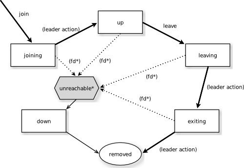

Cluster Specification
Note
This document describes the design concepts of the clustering. It is divided into two parts, where the first part describes what is currently implemented and the second part describes what is planned as future enhancements/additions. References to unimplemented parts have been marked with the footnote [*]
The Current Cluster
Intro
Akka Cluster provides a fault-tolerant decentralized peer-to-peer based cluster membership service with no single point of failure or single point of bottleneck. It does this using gossip protocols and an automatic failure detector.
Terms
- node
- A logical member of a cluster. There could be multiple nodes on a physical machine. Defined by a hostname:port:uid tuple.
- cluster
- A set of nodes joined together through the membership service.
- leader
- A single node in the cluster that acts as the leader. Managing cluster convergence, partitions [*], fail-over [*], rebalancing [*] etc.
Membership
A cluster is made up of a set of member nodes. The identifier for each node is a hostname:port:uid tuple. An Akka application can be distributed over a cluster with each node hosting some part of the application. Cluster membership and partitioning [*] of the application are decoupled. A node could be a member of a cluster without hosting any actors.
The node identifier internally also contains a UID that uniquely identifies this actor system instance at that hostname:port. Akka uses the UID to be able to reliably trigger remote death watch. This means that the same actor system can never join a cluster again once it's been removed from that cluster. To re-join an actor system with the same hostname:port to a cluster you have to stop the actor system and start a new one with the same hotname:port which will then receive a different UID.
Gossip
The cluster membership used in Akka is based on Amazon's Dynamo system and particularly the approach taken in Basho's' Riak distributed database. Cluster membership is communicated using a Gossip Protocol, where the current state of the cluster is gossiped randomly through the cluster, with preference to members that have not seen the latest version. Joining a cluster is initiated by issuing a Join command to one of the nodes in the cluster to join.
Vector Clocks
Vector clocks are a type of data structure and algorithm for generating a partial ordering of events in a distributed system and detecting causality violations.
We use vector clocks to reconcile and merge differences in cluster state during gossiping. A vector clock is a set of (node, counter) pairs. Each update to the cluster state has an accompanying update to the vector clock.
Gossip Convergence
Information about the cluster converges locally at a node at certain points in time. This is when a node can prove that the cluster state he is observing has been observed by all other nodes in the cluster. Convergence is implemented by passing a map from node to current state version during gossip. This information is referred to as the gossip overview. When all versions in the overview are equal there is convergence. Gossip convergence cannot occur while any nodes are unreachable. The nodes need to be moved to the down or removed states (see the Membership Lifecycle section below).
Failure Detector
The failure detector is responsible for trying to detect if a node is unreachable from the rest of the cluster. For this we are using an implementation of The Phi Accrual Failure Detector by Hayashibara et al.
An accrual failure detector decouple monitoring and interpretation. That makes them applicable to a wider area of scenarios and more adequate to build generic failure detection services. The idea is that it is keeping a history of failure statistics, calculated from heartbeats received from other nodes, and is trying to do educated guesses by taking multiple factors, and how they accumulate over time, into account in order to come up with a better guess if a specific node is up or down. Rather than just answering "yes" or "no" to the question "is the node down?" it returns a phi value representing the likelihood that the node is down.
The threshold that is the basis for the calculation is configurable by the user. A low threshold is prone to generate many wrong suspicions but ensures a quick detection in the event of a real crash. Conversely, a high threshold generates fewer mistakes but needs more time to detect actual crashes. The default threshold is 8 and is appropriate for most situations. However in cloud environments, such as Amazon EC2, the value could be increased to 12 in order to account for network issues that sometimes occur on such platforms.
In a cluster each node is monitored by a few (default maximum 5) other nodes, and when any of these detects the node as unreachable that information will spread to the rest of the cluster through the gossip. In other words, only one node needs to mark a node unreachable to have the rest of the cluster mark that node unreachable. Right now there is no way for a node to come back from unreachable. This is planned for the next release of Akka. It also means that the unreachable node needs to be moved to the down or removed states (see the Membership Lifecycle section below).
Leader
After gossip convergence a leader for the cluster can be determined. There is no leader election process, the leader can always be recognised deterministically by any node whenever there is gossip convergence. The leader is simply the first node in sorted order that is able to take the leadership role, where the preferred member states for a leader are up and leaving (see the Membership Lifecycle section below for more information about member states).
The role of the leader is to shift members in and out of the cluster, changing joining members to the up state or exiting members to the removed state. Currently leader actions are only triggered by receiving a new cluster state with gossip convergence.
The leader also has the power, if configured so, to "auto-down" a node that according to the Failure Detector is considered unreachable. This means setting the unreachable node status to down automatically.
Seed Nodes
The seed nodes are configured contact points for initial join of the cluster. When a new node is started it sends a message to all seed nodes and then sends a join command to the seed node that answers first.
It is possible to not use seed nodes and instead join any node in the cluster manually.
Gossip Protocol
A variation of push-pull gossip is used to reduce the amount of gossip information sent around the cluster. In push-pull gossip a digest is sent representing current versions but not actual values; the recipient of the gossip can then send back any values for which it has newer versions and also request values for which it has outdated versions. Akka uses a single shared state with a vector clock for versioning, so the variant of push-pull gossip used in Akka makes use of this version to only push the actual state as needed.
Periodically, the default is every 1 second, each node chooses another random node to initiate a round of gossip with. The choice of node is random but can also include extra gossiping nodes with either newer or older state versions.
The gossip overview contains the current state version for all nodes and also a list of unreachable nodes. This allows any node to easily determine which other nodes have newer or older information, not just the nodes involved in a gossip exchange.
The nodes defined as seed nodes are just regular member nodes whose only "special role" is to function as contact points in the cluster.
During each round of gossip exchange it sends Gossip to random node with newer or older state information, if any, based on the current gossip overview, with some probability. Otherwise Gossip to any random live node.
The gossiper only sends the gossip version to the chosen node. The recipient of the gossip can use the gossip version to determine whether:
- it has a newer version of the gossip state, in which case it sends that back to the gossiper, or
- it has an outdated version of the state, in which case the recipient requests the current state from the gossiper
If the recipient and the gossip have the same version then the gossip state is not sent or requested.
Membership Lifecycle
A node begins in the joining state. Once all nodes have seen that the new node is joining (through gossip convergence) the leader will set the member state to up.
If a node is leaving the cluster in a safe, expected manner then it switches to the leaving state. Once the leader sees the convergence on the node in the leaving state, the leader will then move it to exiting. Once all nodes have seen the exiting state (convergence) the leader will remove the node from the cluster, marking it as removed.
If a node is unreachable then gossip convergence is not possible and therefore any leader actions are also not possible (for instance, allowing a node to become a part of the cluster). To be able to move forward the state of the unreachable nodes must be changed. Currently the only way forward is to mark the node as down. If the node is to join the cluster again the actor system must be restarted and go through the joining process again. The cluster can, through the leader, also auto-down a node.
Note
If you have auto-down enabled and the failure detector triggers, you can over time end up with a lot of single node clusters if you don't put measures in place to shut down nodes that have become unreachable. This follows from the fact that the unreachable node will likely see the rest of the cluster as unreachable, become its own leader and form its own cluster.
State Diagram for the Member States
Member States
- joining
transient state when joining a cluster
- up
normal operating state
- leaving / exiting
states during graceful removal
- down
marked as down (no longer part of cluster decisions)
- removed
tombstone state (no longer a member)
User Actions
- join
join a single node to a cluster - can be explicit or automatic on startup if a node to join have been specified in the configuration
- leave
tell a node to leave the cluster gracefully
- down
mark a node as down
Leader Actions
The leader has the following duties:
- shifting members in and out of the cluster
- joining -> up
- exiting -> removed
Failure Detection and Unreachability
- fd*
the failure detector of one of the monitoring nodes has triggered causing the monitored node to be marked as unreachable
- unreachable*
unreachable is not a real member state but more of a flag in addition to the state signaling that the cluster is unable to talk to this node
Future Cluster Enhancements and Additions
Goal
In addition to membership also provide automatic partitioning [*], handoff [*], and cluster rebalancing [*] of actors.
Additional Terms
These additional terms are used in this section.
- partition [*]
- An actor or subtree of actors in the Akka application that is distributed within the cluster.
- partition point [*]
- The actor at the head of a partition. The point around which a partition is formed.
- partition path [*]
- Also referred to as the actor address. Has the format actor1/actor2/actor3
- instance count [*]
- The number of instances of a partition in the cluster. Also referred to as the N-value of the partition.
- instance node [*]
- A node that an actor instance is assigned to.
- partition table [*]
- A mapping from partition path to a set of instance nodes (where the nodes are referred to by the ordinal position given the nodes in sorted order).
Partitioning [*]
Note
Actor partitioning is not implemented yet.
Each partition (an actor or actor subtree) in the actor system is assigned to a set of nodes in the cluster. The actor at the head of the partition is referred to as the partition point. The mapping from partition path (actor address of the format "a/b/c") to instance nodes is stored in the partition table and is maintained as part of the cluster state through the gossip protocol. The partition table is only updated by the leader node. Currently the only possible partition points are routed actors.
Routed actors can have an instance count greater than one. The instance count is also referred to as the N-value. If the N-value is greater than one then a set of instance nodes will be given in the partition table.
Note that in the first implementation there may be a restriction such that only top-level partitions are possible (the highest possible partition points are used and sub-partitioning is not allowed). Still to be explored in more detail.
The cluster leader determines the current instance count for a partition based on two axes: fault-tolerance and scaling.
Fault-tolerance determines a minimum number of instances for a routed actor (allowing N-1 nodes to crash while still maintaining at least one running actor instance). The user can specify a function from current number of nodes to the number of acceptable node failures: n: Int => f: Int where f < n.
Scaling reflects the number of instances needed to maintain good throughput and is influenced by metrics from the system, particularly a history of mailbox size, CPU load, and GC percentages. It may also be possible to accept scaling hints from the user that indicate expected load.
The balancing of partitions can be determined in a very simple way in the first implementation, where the overlap of partitions is minimized. Partitions are spread over the cluster ring in a circular fashion, with each instance node in the first available space. For example, given a cluster with ten nodes and three partitions, A, B, and C, having N-values of 4, 3, and 5; partition A would have instances on nodes 1-4; partition B would have instances on nodes 5-7; partition C would have instances on nodes 8-10 and 1-2. The only overlap is on nodes 1 and 2.
The distribution of partitions is not limited, however, to having instances on adjacent nodes in the sorted ring order. Each instance can be assigned to any node and the more advanced load balancing algorithms will make use of this. The partition table contains a mapping from path to instance nodes. The partitioning for the above example would be:
A -> { 1, 2, 3, 4 }
B -> { 5, 6, 7 }
C -> { 8, 9, 10, 1, 2 }
If 5 new nodes join the cluster and in sorted order these nodes appear after the current nodes 2, 4, 5, 7, and 8, then the partition table could be updated to the following, with all instances on the same physical nodes as before:
A -> { 1, 2, 4, 5 }
B -> { 7, 9, 10 }
C -> { 12, 14, 15, 1, 2 }
When rebalancing is required the leader will schedule handoffs, gossiping a set of pending changes, and when each change is complete the leader will update the partition table.
Additional Leader Responsibilities
After moving a member from joining to up, the leader can start assigning partitions [*] to the new node, and when a node is leaving the leader will reassign partitions [*] across the cluster (it is possible for a leaving node to itself be the leader). When all partition handoff [*] has completed then the node will change to the exiting state.
On convergence the leader can schedule rebalancing across the cluster, but it may also be possible for the user to explicitly rebalance the cluster by specifying migrations [*], or to rebalance [*] the cluster automatically based on metrics from member nodes. Metrics may be spread using the gossip protocol or possibly more efficiently using a random chord method, where the leader contacts several random nodes around the cluster ring and each contacted node gathers information from their immediate neighbours, giving a random sampling of load information.
Handoff
Handoff for an actor-based system is different than for a data-based system. The most important point is that message ordering (from a given node to a given actor instance) may need to be maintained. If an actor is a singleton actor (only one instance possible throughout the cluster) then the cluster may also need to assure that there is only one such actor active at any one time. Both of these situations can be handled by forwarding and buffering messages during transitions.
A graceful handoff (one where the previous host node is up and running during the handoff), given a previous host node N1, a new host node N2, and an actor partition A to be migrated from N1 to N2, has this general structure:
- the leader sets a pending change for N1 to handoff A to N2
- N1 notices the pending change and sends an initialization message to N2
- in response N2 creates A and sends back a ready message
- after receiving the ready message N1 marks the change as complete and shuts down A
- the leader sees the migration is complete and updates the partition table
- all nodes eventually see the new partitioning and use N2
Transitions
There are transition times in the handoff process where different approaches can be used to give different guarantees.
Migration Transition
The first transition starts when N1 initiates the moving of A and ends when N1 receives the ready message, and is referred to as the migration transition.
The first question is; during the migration transition, should:
- N1 continue to process messages for A?
- Or is it important that no messages for A are processed on N1 once migration begins?
If it is okay for the previous host node N1 to process messages during migration then there is nothing that needs to be done at this point.
If no messages are to be processed on the previous host node during migration then there are two possibilities: the messages are forwarded to the new host and buffered until the actor is ready, or the messages are simply dropped by terminating the actor and allowing the normal dead letter process to be used.
Update Transition
The second transition begins when the migration is marked as complete and ends when all nodes have the updated partition table (when all nodes will use N2 as the host for A, i.e. we have convergence) and is referred to as the update transition.
Once the update transition begins N1 can forward any messages it receives for A to the new host N2. The question is whether or not message ordering needs to be preserved. If messages sent to the previous host node N1 are being forwarded, then it is possible that a message sent to N1 could be forwarded after a direct message to the new host N2, breaking message ordering from a client to actor A.
In this situation N2 can keep a buffer for messages per sending node. Each buffer is flushed and removed when an acknowledgement (ack) message has been received. When each node in the cluster sees the partition update it first sends an ack message to the previous host node N1 before beginning to use N2 as the new host for A. Any messages sent from the client node directly to N2 will be buffered. N1 can count down the number of acks to determine when no more forwarding is needed. The ack message from any node will always follow any other messages sent to N1. When N1 receives the ack message it also forwards it to N2 and again this ack message will follow any other messages already forwarded for A. When N2 receives an ack message, the buffer for the sending node can be flushed and removed. Any subsequent messages from this sending node can be queued normally. Once all nodes in the cluster have acknowledged the partition change and N2 has cleared all buffers, the handoff is complete and message ordering has been preserved. In practice the buffers should remain small as it is only those messages sent directly to N2 before the acknowledgement has been forwarded that will be buffered.
Graceful Handoff
A more complete process for graceful handoff would be:
- the leader sets a pending change for N1 to handoff A to N2
- N1 notices the pending change and sends an initialization message to N2. Options:
- keep A on N1 active and continuing processing messages as normal
- N1 forwards all messages for A to N2
- N1 drops all messages for A (terminate A with messages becoming dead letters)
- in response N2 creates A and sends back a ready message. Options:
- N2 simply processes messages for A as normal
- N2 creates a buffer per sending node for A. Each buffer is opened (flushed and removed) when an acknowledgement for the sending node has been received (via N1)
- after receiving the ready message N1 marks the change as complete. Options:
- N1 forwards all messages for A to N2 during the update transition
- N1 drops all messages for A (terminate A with messages becoming dead letters)
- the leader sees the migration is complete and updates the partition table
- all nodes eventually see the new partitioning and use N2
- each node sends an acknowledgement message to N1
- when N1 receives the acknowledgement it can count down the pending acknowledgements and remove forwarding when complete
- when N2 receives the acknowledgement it can open the buffer for the sending node (if buffers are used)
The default approach is to take options 2a, 3a, and 4a - allowing A on N1 to continue processing messages during migration and then forwarding any messages during the update transition. This assumes stateless actors that do not have a dependency on message ordering from any given source.
- If an actor has a distributed durable mailbox then nothing needs to be done, other than migrating the actor.
- If message ordering needs to be maintained during the update transition then option 3b can be used, creating buffers per sending node.
- If the actors are robust to message send failures then the dropping messages approach can be used (with no forwarding or buffering needed).
- If an actor is a singleton (only one instance possible throughout the cluster) and state is transferred during the migration initialization, then options 2b and 3b would be required.
Stateful Actor Replication [*]
Note
Stateful actor replication is not implemented yet.
Implementing a Dynamo-style Distributed Database on top of Akka Cluster
Having a Dynamo base for the clustering already we could use the same infrastructure to provide stateful actor clustering and datastore as well. The stateful actor clustering could be layered on top of the distributed datastore.
The missing pieces (rough outline) to implement a full Dynamo-style eventually consistent data storage on top of the Akka Cluster as described in this document are:
Configuration of READ and WRITE consistency levels according to the N/R/W numbers defined in the Dynamo paper.
- R = read replica count
- W = write replica count
- N = replication factor
- Q = QUORUM = N / 2 + 1
- W + R > N = full consistency
Define a versioned data message wrapper:
Versioned[T](hash: Long, version: VectorClock, data: T)
Define a single system data broker actor on each node that uses a Consistent Hashing Router and that have instances on all other nodes in the node ring.
For WRITE:
- Wrap data in a Versioned Message
- Send a Versioned Message with the data is sent to a number of nodes matching the W-value.
For READ:
- Read in the Versioned Message with the data from as many replicas as you need for the consistency level required by the R-value.
- Do comparison on the versions (using Vector Clocks)
- If the versions differ then do Read Repair to update the inconsistent nodes.
- Return the latest versioned data.
[*] Not Implemented Yet
- Actor partitioning
- Actor handoff
- Actor rebalancing
- Stateful actor replication
- Node becoming reachable after it has been marked as unreachable
Contents